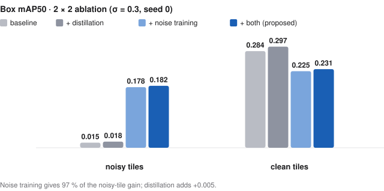
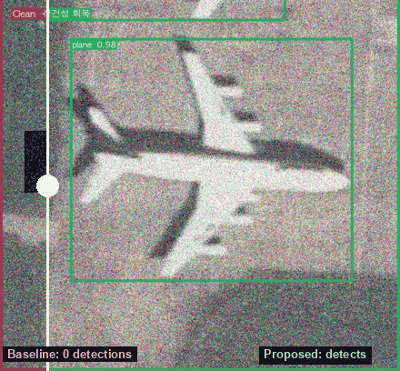

Noise-robust object detection via heterogeneous relational KD
위성 센서 노이즈 속에서도 가벼운 검출기가 동작하게 하는 연구입니다. 배포 모델은 그대로 두고 학습만 바꿨습니다.
Keep a lightweight detector working under satellite sensor noise. DINOv2 (ViT) → YOLOv8s-seg (CNN) distance-wise relational distillation, plus 50:50 mixed-noise training; teacher and adapter are removed at inference, so the deployed model is unchanged (11.8M parameters / 22 MB).
- +0.163 box mAP50 under noise (σ = 0.3), stable across seeds (±0.0005)
- 97% of the gain from noise training; distillation adds +0.005
- −0.053 cost on clean tiles, also seed-stable
What I tried
The target is a detector small enough for an on-board computer that still works when the image is noisy. The obvious route — distil a large, robust vision transformer into a small CNN — took four attempts.
The four attempts
| attempt | idea | what happened | why it fell short |
|---|---|---|---|
| 1 · Feature-matching KD | 1×1 adapter, MSE between DINOv2 and YOLO features (small COCO subset) | mAP below the plain detector | adapter too shallow; no detection loss in the objective |
| 2 · Adapter v1 → v9 | residual adapter with GroupNorm, GELU, coordinate attention; MSE + RKD + cosine; PCGrad against gradient clash (COCO 40k) | clean mAP50 0.5423 → 0.5616, but at σ = 0.3 0.4171 → 0.4058 | the distilled backbone fell faster under noise — clean-image knowledge did not transfer to noisy inputs |
| 3 · Clean teacher, noisy student | teacher sees the clean tile, student the noisy one; align their statistics on iSAID | loss converged; no measured robustness gain | matching statistics of noisy features did not make detection robust |
| 4 · RKD + mixed-noise training (final) | distance-wise relational KD plus 50:50 clean/noisy training; teacher and adapter removed at inference | noisy mAP50 +0.163 at the same 22 MB model | — |
Results

Table
| model | noisy | clean |
|---|---|---|
| Baseline (clean-only) | 0.015 | 0.284 |
| + distillation only | 0.018 | 0.297 |
| + noise training | 0.178 | 0.225 |
| + distillation (proposed) | 0.182 | 0.231 |

What the 2 × 2 ablation says
Noise training gives 97 % of the gain (+0.163 noisy mAP50); distillation adds a small, consistent +0.005. Robustness costs about 0.06 on clean tiles.
Details
Running all four combinations (with / without distillation × with / without noise training) separated the two effects. Noise training alone gives +0.163 noisy mAP50 — 97% of the gain; distillation adds +0.005, small but positive in all four comparisons. The two barely interact. Robustness is not free: clean mAP50 drops by about 0.06.
Update · 2026.11 — spatial distillation (graduation thesis)
The 2 × 2 left one question open: can the teacher add more than +0.005 if it teaches where, not just how images relate? I aligned DINOv2 patch tokens to student features position by position (cosine distance, teacher tokens with outlier norms masked) and checked each variant against a control in which the teacher's token positions are shuffled per image.
- +0.020 / +0.010 noisy mAP50 over noise training alone with centred alignment (seeds 0 / 1); clean also +0.014 / +0.017
- [+0.015, +0.024] 95% bootstrap interval of that gap on seed 0 (evaluation-sample variation only)
- plain alignment (λ = 0.5) and image-level relational KD: no gain (−0.008; +0.001 / −0.002)
| condition (seed 0) | clean | noisy | noisy, small objects |
|---|---|---|---|
| noise training only (λ = 0) | 0.597 | 0.381 | 0.242 |
| + image-level relational KD | 0.593 | 0.382 | 0.244 |
| + plain alignment, λ = 0.5 | 0.596 | 0.374 | 0.240 |
| same, positions shuffled | 0.591 | 0.384 | 0.245 |
| + centred alignment, λ = 2.5 | 0.611 | 0.401 | 0.253 |
| same, positions shuffled | 0.587 | 0.375 | 0.245 |
| + plain alignment, λ = 2.5 | 0.606 | 0.391 | 0.248 |
In a short diagnostic run, plain alignment pushed student features toward one position-independent direction. Subtracting each image's mean token from teacher and student before the cosine distance (centring) removes that shared component and aligns each position's deviation. It is the only variant that beat both noise training alone and its own shuffled control. Across evaluation noise levels, centred alignment led at σ = 0.1–0.3 on both seeds, and in all six seed × noise-sample combinations at σ = 0.3.
What this does not show yet
Centring and λ changed together; plain alignment at λ = 2.5 landed in between (0.391), so the two effects are not separated. The shuffled controls and that check have one seed each. The main comparison has two training seeds, and at σ = 0.4 the sign flipped on seed 1. The bootstrap resamples patches cut from 458 source images, so the interval is likely too narrow. Only Gaussian noise was tested.
Implementation
Implementation (sole author of the ML code): RKD loss, custom Ultralytics trainer (SPPF hook, adapter, mixed noise), three framework-level bug fixes.